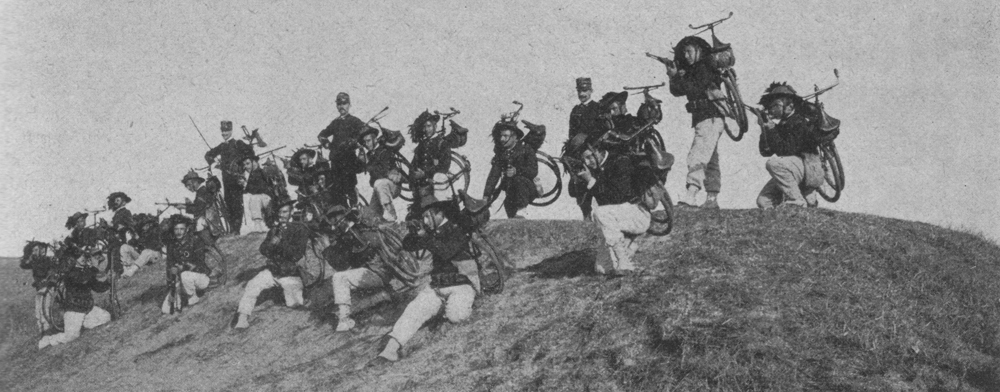
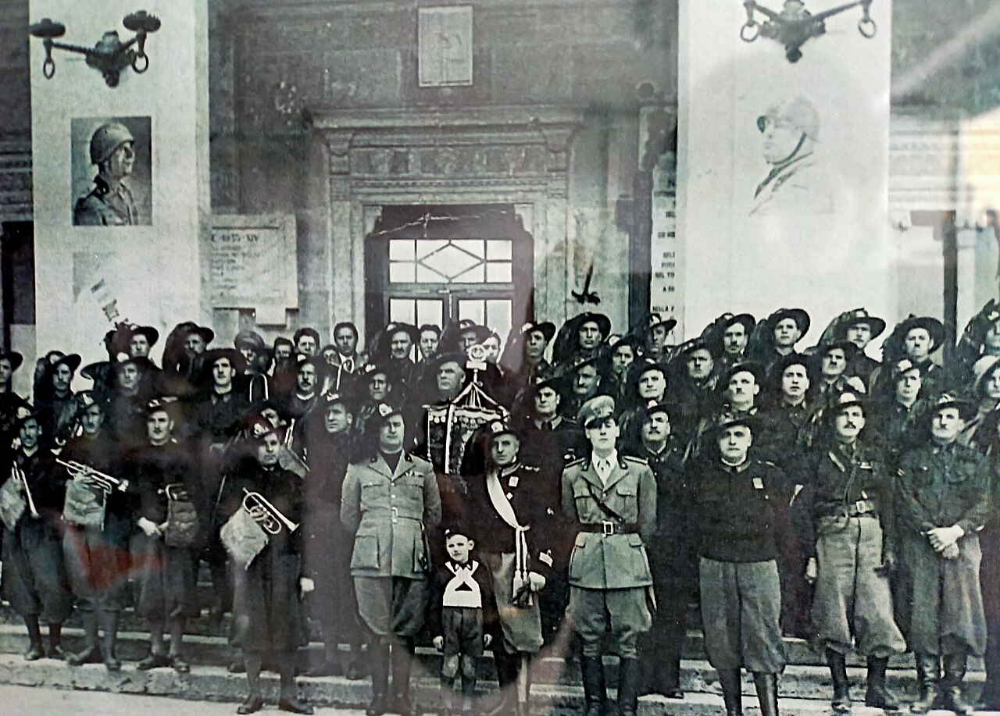

LA STORIA LEGGENDARIA
La Fondazione del Mito
Il Corpo dei Bersaglieri viene fondato dal Re Carlo Alberto di Savoia su proposta del generale Alessandro Ferrero della Marmora. La loro missione originale è rivoluzionaria: fanteria leggera e mobile, in grado di coprire grandi distanze a velocità straordinaria. Ogni soldato deve correre 4 km in 25 minuti - un record per l'epoca.
Velocità: Principio cardine e distintivo di tutto il corpo.
L'Indipendenza Italiana
I Bersaglieri combattono valorosamente in tutte le campagne per l'indipendenza italiana. Dalla Prima Guerra d'Indipendenza (1848) fino alla Presa di Roma (1870), il loro coraggio diventa leggendario. A Castelfidardo (1860) e nel Trentino, dimostrano una dedizione assoluta alla causa dell'Italia unita. Le loro cariche impetuose e coordinate lasciano il segno nella storia militare.
La Battaglia di Custoza
Nella Terza Guerra d'Indipendenza, i Bersaglieri partecipano a questa cruciale battaglia. Nonostante la sconfitta dai Prussiani, guidati dal generale Moltke, i Bersaglieri combattono fino all'ultimo uomo. La loro determinazione nel fronteggiare forze superiori cementa la reputazione di soldati indomabili e leali.
La Campagna d'Africa
I Bersaglieri partecipano alle campagne coloniali africane, inclusa la memorabile Battaglia di Adwa (1896). Combattono in condizioni estreme, affrontando nemici numerosi e il clima ostile. La loro resilienza e addestramento li rendono temuti e rispettati anche oltreoceano, consolidando l'immagine di una fanteria d'élite senza pari.
La Grande Guerra
Durante la Prima Guerra Mondiale, i Bersaglieri scrivono pagine di eroismo indimenticabile. Combattono sulle montagne glaciali del Trentino, nelle foreste del Carso, e nella valle dell'Isonzo. Oltre 180.000 Bersaglieri partecipano al conflitto, con decine di migliaia di Caduti. La diciassettesima battaglia dell'Isonzo (Caporetto) vede i Bersaglieri tenere posizioni vitali con straordinaria dedizione.
Un intero esercito di valorosi guerrieri nel nome del tricolore.
La Seconda Guerra Mondiale
Durante il secondo conflitto mondiale, i Bersaglieri operano in teatro europeo e africano. Partecipano alla Campagna di Grecia, al Fronte del Nord Africa, e successivamente alla difesa della Patria. Nonostante le avversità, mantengono intatta la loro tradizione di coraggio e disciplina militare.
La Repubblica e l'Eredità Moderna
Nella Repubblica Italiana, i Bersaglieri continuano a servire con onore. Partecipano alle operazioni di peacekeeping internazionali, missioni di soccorso umanitario, e mantengono viva la tradizione nazionale. Oggi, nel 2026, i Bersaglieri rimangono un simbolo vivente di dedizione, rapidità e coraggio. Il loro motto "Vis animus impetus" (Forza, Coraggio, Impeto) guida ancora ogni azione.

🎖️ Il Piumetto Tricolore
Il famoso cappello piumato, composto da 132 penne nere naturali di cappone. Simbolo immediatamente riconoscibile dalle prime compagnie del 1836 fino ai giorni nostri - parte dell'identità bersaglierca.

⚡ Velocità Leggendaria
Dal "Passo di Corsa" alle biciclette (1902) fino alle motociclette moderne. Il Bersagliere non è solo un soldato, ma un atleta. La mobilità tattica è parte dell'identità del corpo dal 1836.

🏆 Tradizione Ininterrotta
Foto del Centenario (18 giugno 1936) ad Avezzano - dopo 100 anni, la tradizione bersagliesca rimane intatta. Le generazioni di soldati mantengono vivo l'onore del Corpo.